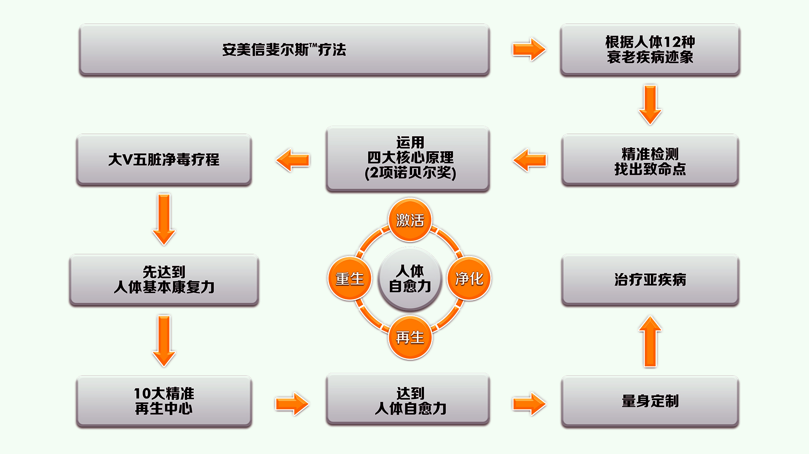

-
安美信PHYSIS斐尔斯精准再生疗法-以诺贝尔获奖基础理论为核心的项目疗法，涵盖病毒学、免疫学、细胞生物学、分子药理学等领域， 拥有以探索人体“致病点”为核心的4大类精准检测系统，斐尔斯检测、临床检测、功能医学检测、基因检测，根据人体12种衰老疾病迹象， 从“人体致病点”科学开始，全面性、综合性、个性化精准检测、精准评估，运用净化、激活、再生、重生4大核心原理精准治疗， 并予全面性个性化干预方案，恢复人体基本的康复力，达到人体自愈力，从而实现治未病，改善人类亚健康。
-
传统医学
斐尔斯疗法
-
是什么病
为什么会生病
-
找出致病的单一原因
考虑复杂的内部
联动关系 -
将不同的病症分开认定
不同病症的关联性
-
病理诊断
恢复身体的各项功能
-
安美信十大精准再生管理中心，具备专业、科学、个性化的生命全方位管理系统， 针对不同类型疾病、治疗功能，提供健康管理，实现靶向针对、修复再生。
-
所有疾病始于肠道；生殖是青春的根基；血液是维系生命的源泉；细胞衰老是疾病的总开关。
安美信针对人体的四大重要功能，创新打造四大闭环项目链：肠道管理、血液血管管理、生殖管理、细胞线粒体管理， 以基础定制口服调理到精准医疗项目，形成一体化管理体系，帮助增强或恢复人体四大功能，远离衰老和疾病。